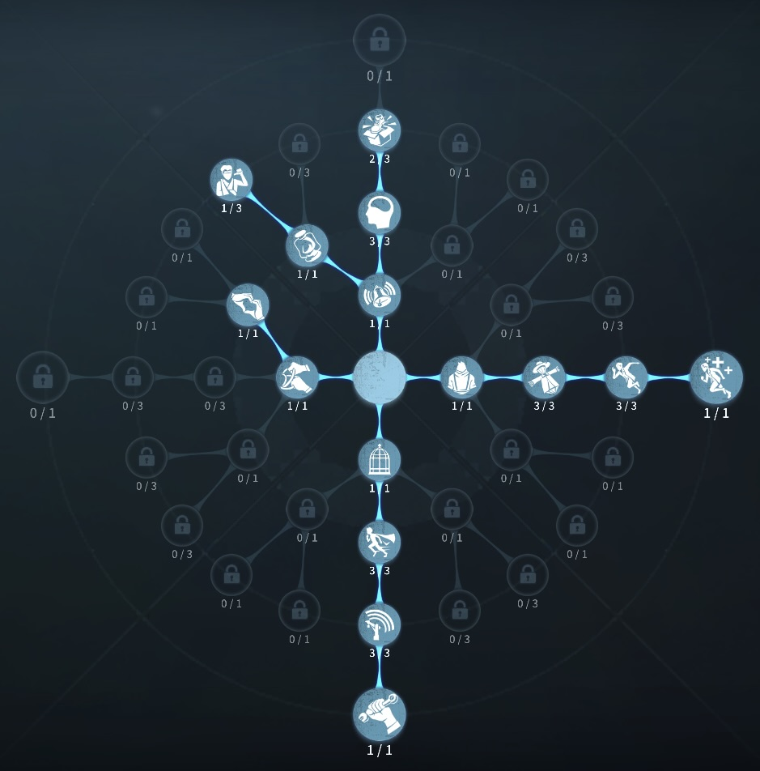
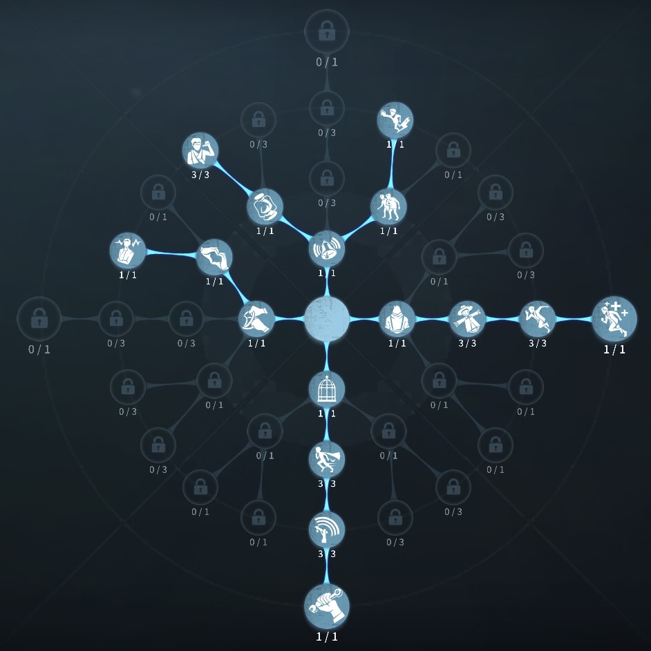

墓守の評価
地下救助最強
外在特質と特徴
特質1:穴掘り
・墓守は１ゲージ35秒分のスコップを2つ持っており、使用することで最大35秒間地下に潜って移動できる。また、２階や地下の上では穴を掘って下に降りることができる。穴は9秒間残る。 潜っている最中は板の下を通ることができる。・耐久時間が時間経過か使用中止、または累計1ダメージ以上攻撃を受けると地下潜行状態は解除され鉄スコップが消費される。 潜航中にハンターの通常攻撃が命中した場合、攻撃回復速度が10%増加する。
・鉄スコップの消費時間：15秒
『地下潜行』状態中に付近の位置を選択するとその地点に素早く移動してから地下潜行状態を解除する。その際に付近にいるハンターをノックバックさせる。
特質2:幽閉の恐怖
・潜っているとき移動速度10％アップ。特質3:安心
・自ら地下潜行を止め、かつ地下潜行中にダメージを受けずに地上に戻ってくると、5秒間救助速度50％アップ特質4:機械音痴
・解読速度15％低下特徴
地下救助最強救助職 スコップを使って倒れている板でチェイスができる。 救助速度が高速なサバイバー。また、解読速度が15％低下と救助職だと重くない低下。
基本的な立ち回り方
1. 追われた時
追われる前に何枚か板を倒しておこう。
その後早めにスコップをしようして倒れた板をつかってチェイスしよう。
タゲチェンされたらスコップから出て温存。
2. 追われない時
解読をしよう！
状況を見て救助待機をしよう
吊られている椅子にある程度近づいたらスコップを使い救助しよう。
中間で見つかったら即座にスコップを使っておこう。
スコップから出てきたら5秒間救助速度が50％アップしているのであわよくば無傷救助が狙える。
解読の回りによって被ダメするかしないかを考えよう。
おすすめの内在人格
危機一髪ファーストチェイス型人格
この内在人格は、ウィーバーの法則を採用することで、ファーストチェイスに追われてもスコップを安全に使えたり安全面最強人格

危機一髪治療型人格
この内在人格は、癒合で治療を最大化、鵜化効果で解読速度強化、共生効果で救助のよりを早くした人格


みんなのコメント